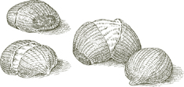
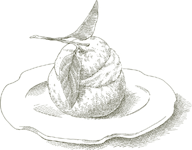

Крокканте — это самая темная, хрустящая и наименее сладкая из пралин, неотразимая конфета, которая затмевает большинство десертов и удивительно проста в приготовлении дома. Подавайте её с кофе после ужина или угощайте ею гостей в любое время, когда они могут заглянуть, положите немного в пакет, когда отправляетесь в поездку, или раскрошите и измельчите её, чтобы использовать в качестве топпинга для мороженого или смешать с глазурью других десертов. Храните её в плотно закрытой банке или завернутой в алюминиевую фольгу в течение нескольких недель, но как только вы начнете её грызть, она долго не продержится.
На 4–6 порций в качестве конфеты, около 2½ чашки, если раскрошить
170 г (примерно 1½ чашки) очищенных миндалей с кожурой
1 полная чашка сахарного песка
Большой лист прочной алюминиевой фольги, разложенный на столе и смазанный 1 чайной ложкой оливкового масла
Очищенный картофель
1. Опустите миндаль в кастрюлю с кипящей водой. Слейте воду через 2 минуты, заверните их в грубую ткань, смоченную холодной водой, и энергично потрите в течение одной-двух минут. Откройте ткань, удалите миндаль, который очистился, вместе со всеми свободными кожурами, и если остались орехи с кожурой, повторите операцию, пока все они не будут очищены. Выбросьте всю кожуру и нарежьте миндаль очень мелко, используя нож, а не кухонный комбайн, на кусочки размером примерно с половину зерна риса.
2. Положите сахар и ¼ чашки воды в небольшую, желательно легкую, кастрюлю. Растопите сахар на среднем огне, не помешивая, но периодически наклоняя кастрюлю. Когда растопленный сахар приобретет насыщенный золотисто-коричневый цвет, добавьте нарезанный миндаль и постоянно помешивайте, пока смесь миндаля и карамелизированного сахара не станет золотисто-коричневой. Немедленно вылейте её на смазанную оливковым маслом алюминиевую фольгу. Разрежьте картофель пополам и используйте плоскую сторону, чтобы раскатать горячую пралину очень тонко, до толщины около ⅛ дюйма (0.3 см).
3. Если хотите использовать это как конфету: Нарежьте её на ромбики размером 2 дюйма (5 см) до того, как она остынет. Когда она полностью остынет, снимите кусочки с фольги и положите их в банку с закручивающейся крышкой или в пакеты из фольги, плотно завернутые, и храните в сухом, прохладном шкафу.
Если хотите использовать это для топпинга: Когда она полностью остынет, сломайте её на кусочки и измельчите в кухонном комбайне. Храните в герметичной банке, но не refrigerate.
В Болонье рисовый пирог готовили только на Пасху, что стало поводом для оживленного соперничества между теми семьями, которые утверждали, что у них самый вкусный и аутентичный рецепт. Рецепт, представленный здесь, пришел ко мне от известных болонских пекарей, сестер Симили, которые без колебаний уверяли меня, что их версия самая вкусная и аутентичная. Я оставляю вопрос об аутентичности тем, кто более склонен обсуждать это, но факт остается фактом: я никогда не пробовала более вкусный рисовый пирог.
На 6–8 порций
1 кварта (950 мл) молока
¼ чайной ложки соли
2–3 полоски лимонной цедры, только кожура, без белой мякоти под ней
1 ¼ чашки (250 г) сахара
⅓ чашки (60 г) риса, предпочтительно импортированного итальянского риса Арборио
4 яйца и 1 желток
½ чашки (75 г) миндаля, бланшированного, очищенного и нарезанного, как описано
⅓ чашки (50 г) нарезанного засахаренного цитрона
Форма для выпечки размером 6 чашек (1.5 л), квадратная или прямоугольная
Сливочное масло для смазывания формы
Мелкие, сухие, безвкусные хлебные крошки
2 столовые ложки рома
1. Положите молоко, соль, лимонную цедру и сахар в кастрюлю и доведите до умеренного кипения.
2. Как только молоко начнет кипеть, добавьте рис, быстро помешивая деревянной ложкой. Уменьшите огонь до минимального, чтобы варить на медленном огне, и готовьте в течение 2½ часов, периодически помешивая. Когда будет готово, смесь станет густой, светло-коричневой кашей. Большая часть лимонной цедры должна раствориться, но если вы найдете кусочки, удалите их. Отложите рисовую кашу остывать.
3. Разогрейте духовку до 180°C (350°F).
4. Взбейте 4 яйца и желток в большой миске до равномерного смешивания желтков и белков. Добавьте рисовую кашу, вмешивая ее в яйца по одной ложке. Добавьте нарезанный миндаль и засахаренный цитрон, равномерно перемешивая.
5. Щедро смажьте дно и стенки формы для выпечки сливочным маслом. Посыпьте форму хлебными крошками, затем переверните форму и сильно постучите о стол, чтобы стряхнуть лишние крошки. Вылейте смесь из миски в форму, выравнивая ее. Поставьте форму на среднюю полку разогретой духовки и выпекайте в течение 1 часа.
6. Как только вы вынете форму из духовки, пока пирог еще горячий, проколите его в нескольких местах вилкой и полейте ромом. Когда пирог станет теплым, переверните форму на сервировочное блюдо и потрясите или постучите о стол, чтобы освободить пирог. Подавайте рисовый пирог не ранее чем через 24 часа после приготовления; если вы дадите ему настояться еще 2–3 дня, его вкус станет еще более глубоким и насыщенным. Чтобы подать его в традиционном болоньезском стиле, нарежьте пирог перед подачей на стол по диагонали в виде ромбовидных кусочков длиной около 6 см (2½ дюйма).
На 6–8 порций
Сахар, ½ чашки для карамели плюс ⅔ чашки для пудинга
Круглая металлическая форма для выпечки объемом 6 чашек, устойчивая к огню
2 чашки молока
¼ чайной ложки соли
⅓ чашки манной крупы
1 столовая ложка сливочного масла
1 столовая ложка рома
¼ чашки ассорти из засахаренных фруктов, нарезанных на кусочки размером ¼ дюйма (0.6 см)
Натертая цедра 1 апельсина
Горка ⅓ чашки безкосточковых изюминок, предпочтительно сорта мускат, замоченных в достаточном количестве воды для покрытия
Мука высшего сорта
2 яйца
1. Положите ½ чашки сахара и 2 столовые ложки воды в форму и доведите до кипения на плите на среднем огне. Не мешайте, но наклоняйте форму вперед и назад, чтобы переместить растаявший сахар, пока он не станет светло-коричневым. Снимите с огня немедленно и быстро наклоните форму во всех направлениях, пока карамелизированный сахар еще жидкий, чтобы равномерно покрыть форму. Продолжайте поворачивать форму, пока карамель не застынет, затем отложите в сторону.
2. Разогрейте духовку до 175°C (350°F).
3. Положите молоко и соль в кастрюлю и включите огонь на минимальный. Когда молоко начнет закипать, добавьте манную крупу, выливая ее тонкой струйкой и быстро взбивая венчиком. Продолжайте готовить, постоянно помешивая, пока смесь манной крупы и молока не начнет легко отходить от стенок кастрюли. Снимите с огня, но продолжайте мешать еще полминуты, пока не убедитесь, что смесь манной крупы не прилипает к кастрюле.
4. Добавьте ⅔ чашки сахара, перемешайте, затем добавьте сливочное масло и ром и тщательно перемешайте. Добавьте засахаренные фрукты и натертую цедру апельсина, перемешивая, чтобы равномерно распределить их.
5. Слейте изюм и обсушите его в полотенце. Положите его в сито и посыпьте мукой, встряхивая сито. Когда изюм будет равномерно и слегка покрыт мукой, добавьте его в смесь в кастрюле.
6. Разбейте яйца в смесь манной крупы, быстро взбивая их венчиком. Вылейте смесь в карамелизированную форму и поставьте ее на среднюю полку разогретой духовки. Выпекайте в течение 40 минут.
7. Достаньте форму из духовки и дайте пудингу остыть. Затем поместите в холодильник на ночь. На следующий день ненадолго поставьте форму на плиту на низкий огонь, только чтобы размягчить карамель. Снимите с огня, накройте форму блюдом, крепко схватите их вместе с помощью полотенца, переверните и несколько раз резко постучите формой по блюду, пока не почувствуете, что пудинг отходит. Уберите форму, выложив пудинг на блюдо.
На 6–8 порций
Сахар, 1 чашка для карамели плюс ⅓ чашки для пудинга
Прямоугольная огнеупорная металлическая форма для выпечки объемом 8 чашек или форма для хлеба
2½ чашки качественного черствого белого хлеба, обрезанного по краям, слегка поджаренного и нарезанного
4 столовые ложки (½ пачки) сливочного масла
2 чашки молока
½ чашки безкосточковых изюминок, предпочтительно мускатного сорта, замоченных в достаточном количестве воды для покрытия
Мука общего назначения
¼ чашки пиниоли (кедровые орехи)
3 желтка
2 белка
¼ чашки рома
1. Положите 1 чашку сахара и 3 столовые ложки воды в форму и карамелизируйте, следуя инструкциям в Шаге 1 предыдущего рецепта для пудинга из манной крупы.
2. Разогрейте духовку до 190°.
3. Положите нарезанный хлеб и сливочное масло в миску для смешивания.
4. Положите молоко в небольшую кастрюлю, включите средний огонь, и как только молоко начнет образовывать кольцо из мелких пузырьков, вылейте его на хлеб и масло. Не перемешивайте, дайте хлебу настояться в молоке и охладиться. Когда остынет, взбейте его венчиком или вилкой до получения мягкой однородной массы.
5. Слейте изюм и обсушите его в полотенце. Положите его в сито и посыпьте мукой, встряхивая сито. Когда изюм равномерно и слегка покроется мукой, смешайте его с взбитой хлебной массой.
6. Добавьте ⅓ чашки сахара, кедровые орехи и желтки в миску и тщательно перемешайте с другими ингредиентами.
7. В отдельной миске взбейте белки до образования жестких пиков, затем аккуратно вмешайте их в хлебную смесь.
8. Переложите хлебную смесь в карамелизированную форму, выровняйте поверхность и поставьте форму на среднюю полку разогретой духовки. Через 1 час уменьшите температуру до 150°C (300°F) и выпекайте еще 15 минут.
9. Как только вы достанете форму из духовки, пока пудинг еще горячий, проколите его в нескольких местах вилкой и полейте 2 столовыми ложками рома. Когда ром впитается, переверните форму на сервировочное блюдо и слегка постучите или потрясите ее о стол, чтобы освободить пудинг. Поднимите форму, выложив пудинг на блюдо, проколите пудинг в нескольких местах и полейте оставшимися 2 столовыми ложками рома. Дайте пудингу настояться как минимум сутки перед подачей. Вы можете хранить его в холодильнике несколько дней, но дайте ему достичь комнатной температуры перед подачей на стол.
Сбриччолона — в буквальном смысле «та, что крошится» — это сухой, печеный торт, который восхитителен после ужина с бокалом вин санто или Порта, и он также будет уместен между приемами пищи, например, как перекус в середине утра или с чашкой чая или кофе после обеда.
Он действительно крошится, и часть его очарования заключается в нерегулярности кусочков, на которые он ломается. Если вы предпочитаете подавать его аккуратными секциями в форме клина, однако, нарежьте его, пока он теплый, до того как он затвердеет. Сбриччолона прекрасно хранится в течение нескольких дней, завернутая в фольгу или хранящаяся в жестяной коробке для печенья.
Мое первое знакомство с sbricciolona произошло в Ферраре, где я училась в университете. Но когда вы путешествуете по северной Италии, вы найдете sbricciolona и в других местах, особенно в Мантове, а также в винодельческом регионе Ланге в Пьемонте, где его делают с фундуком вместо миндаля.
На 6 порций
¼ фунта (115 г) миндаля, очищенного и без кожи как описано
1½ чашки универсальной муки
⅔ чашки кукурузной муки
⅝ чашки сахарного песка
Цедра 1 лимона, натертая без белой мякоти
2 желтка
8 столовых ложек (1 пачка) сливочного масла, размягченного до комнатной температуры, плюс еще немного для смазывания формы для торта
Круглая форма для торта диаметром 30 см
1. Разогрейте духовку до 190°C (375°F).
2. Измельчите очищенный миндаль в порошок в кухонном комбайне, включая и выключая мотор.
3. Положите муку, кукурузную муку, сахарный песок, натертую лимонную цедру и порошкообразный миндаль в миску и хорошо перемешайте. Добавьте 2 желтка и работайте с смесью руками, пока она не начнет распадаться на маленькие гранулы. Добавьте размягченное сливочное масло, вмешивая его пальцами, пока оно полностью не соединится со смесью. (Сначала может показаться невероятным, что все ингредиенты могут быть объединены, но после нескольких минут работы вы обнаружите, что они действительно соединяются, образуя сухое, крошливое тесто.)
4. Смазать дно формы для торта маслом. Раскрошить тесто через пальцы в форму, пока оно не распределится равномерно. Поместить форму в верхнюю треть предварительно разогретой духовки и выпекать в течение 40 минут. Подавайте, когда полностью остынет и затвердеет (см. предварительную заметку выше).
ИЗВЕСТНЫЕ ПОД различными названиями—чиаккьере делла нонна, «маленькие разговоры бабушки», и фраппе являются наиболее распространенными—эти фриттеры представляют собой ленты теста, скрученные в бантики и обжаренные. Вкус и тонкая, хрустящая текстура традиционных версий зависят от использования свиного жира как в тесте, так и для жарки.
Если у вас есть непреодолимые возражения против сала, можно использовать сливочное масло и оливковое масло, как указано ниже.
На 4–6 порций
1⅔ чашки муки высшего сорта
¼ чашки свиного жира ИЛИ сливочного масла
1 столовая ложка сахара
1 яйцо
2 столовые ложки сухого белого вина
¼ чайной ложки соли
Сало или оливковое масло для жарки
Сахарная пудра
1. Смешайте муку с ¼ стакана сала или сливочного масла и сахаром, яйцом, белым вином и солью, вымешивая до получения гладкого, мягкого теста. Поместите тесто в миску, накройте пленкой и дайте отдохнуть минимум 15 минут.
2. На слегка посыпанной мукой поверхности раскатайте тесто до толщины ⅛ дюйма, затем нарежьте его на ленты длиной около 5 дюймов и шириной ½ дюйма. Закрутите и сложите ленты в простые бантики.
3. Растопите достаточное количество сала в сковороде — или налейте достаточно оливкового масла — чтобы оно поднялось на 1 дюйм по бокам сковороды. Установите высокий огонь. Когда жир станет очень горячим, положите столько тестовых бантиков, сколько свободно поместится в сковороду. Жарьте их до глубокого золотистого цвета с одной стороны, затем переверните и поджарьте с другой стороны. Переложите их на решетку для охлаждения, чтобы стечь. (Если вы используете сало, убедитесь, что оно не перегревается. Если почувствуете запах подгорания, уменьшите огонь.) Повторяйте процедуру, пока все оставшиеся бантики не будут готовы. Посыпьте сахарной пудрой и подавайте либо горячими, либо при комнатной температуре. Фриттерам обычно не удается долго оставаться, поэтому как лучше их хранить может оставаться чисто теоретическим, но если что-то останется, сложите их на тарелку и храните в шкафу. Они прекрасно сохраняются в течение нескольких дней.
На 4–6 порций
3 яблока любого твердого, но не кислого, сорта для приготовления
¼ чашки сахара
2 столовые ложки рома
Цедра 1 лимона, натертая, не задевая белую мякоть
⅔ чашки муки
Оливковое масло
Сахарная пудра
1. Очистите и удалите сердцевину из яблок, нарежьте их ломтиками толщиной около ⅜ дюйма (1 см).
2. Поместите сахар, ром и натертую лимонную цедру в миску вместе с яблочными ломтиками. Переверните ломтики один или два раза и дайте настояться не менее 1 часа.
3. Используйте муку и около 1 чашки воды, чтобы приготовить тесто пастелла как описано.
4. Налейте достаточно масла в сковороду, чтобы оно поднялось на ½ дюйма (1.25 см) по бокам, и включите огонь на максимум.
5. Выньте яблочные ломтики из миски и обсушите их бумажными полотенцами. Когда масло станет очень горячим, обмакните их в тесто и аккуратно положите столько, сколько поместится в сковороду. Обжаривайте до золотистой корочки с одной стороны, затем переверните и обжарьте с другой стороны. Переложите их на решетку, чтобы стекло масло. Повторяйте процедуру, пока все оставшиеся ломтики не будут готовы. Посыпьте сахарной пудрой и подавайте горячими.
Существует ли ДРУГОЙ десерт, как дипломатико, который вознаграждает столь малым усилием такие удовлетворительные результаты? Вам даже не нужно включать духовку, потому что вы используете готовый бисквит. Ломтики пропитанного ромом и кофе бисквита чередуются с простой смесью, похожей на мусс, из растопленного шоколада и яиц, и, в общем, это все. Вы не ошибетесь: добавьте немного меньше рома, добавьте немного больше шоколада, добавьте или уберите яйцо, и это все равно будет большим успехом.
На 6–8 порций
ДЛЯ ПРОПИТКИ РОМ И КОФЕ
5 столовых ложек рома
1¼ чашки крепкого эспрессо
5 чайных ложек сахара
5 столовых ложек воды
Примечание  Некоторые кексы впитывают больше, чем другие, и смеси рома и кофе может не хватить для пропитки всех ломтиков; имейте в запасе дополнительный кофе и ром и приготовьте больше, если это необходимо, ориентируясь на указанные выше пропорции.
Некоторые кексы впитывают больше, чем другие, и смеси рома и кофе может не хватить для пропитки всех ломтиков; имейте в запасе дополнительный кофе и ром и приготовьте больше, если это необходимо, ориентируясь на указанные выше пропорции.
Кекс весом 16 унций (450 г)
Марля
Прямоугольная форма для торта размером 9 дюймов (если вы хотите, чтобы ваш десерт был высоким, а не широким, используйте узкую форму для хлеба)
4 яйца
1 чайная ложка сахара
Двойной котел
6 унций полусладкого шоколада в каплях или нарезанного, или тертого
ГЛАЗУРЬ
(Если вы предпочитаете шоколад)
115 граммов полусладкого шоколада в каплях или нарезанного, или тертого
1 чайная ложка сливочного масла
1 столовая ложка жирных сливок для взбивания
(Если вы предпочитаете взбитые сливки)
1 чашка очень холодных жирных сливок для взбивания
1 чайная ложка сахарного песка
Медная или другая миска для смешивания, охлажденная в морозильной камере
УКРАШЕНИЕ
Свежие ягоды ИЛИ грецкие орехи и засахаренные фрукты для шоколадной или взбитой сливочной глазури
1. Для пропитки ромом и кофе: В небольшой миске соедините ром, эспрессо, сахар и воду. Нарежьте бисквит на ломтики толщиной ¼ дюйма (0.6 см). Увлажните марлю водой и используйте ее, чтобы выстлать внутреннюю часть формы для торта, оставив достаточно, чтобы она свисала за края формы и покрывала торт позже. Пропитайте бисквит, ломтик за ломтиком, в смеси рома и кофе, затем используйте ломтики для выстилки дна и стенок формы. Не оставляйте пробелов, заполняя их по мере необходимости кусочками пропитанного бисквита. Быстро опускайте ломтики в смесь, иначе они станут слишком мокрыми для обработки. Если у вас закончится ром и кофе, приготовьте еще.
2. Для шоколадной начинки: Отделите белки от желтков и взбейте желтки с 1 чайной ложкой сахара до светло-желтого цвета.
3. Налейте воду в нижнюю часть пароварки, доведите до легкого, но устойчивого кипения, затем положите шоколадные капли или нарезанный или тертый полусладкий шоколад в верхнюю часть пароварки. Когда шоколад растает, постепенно выливайте его на желтки, быстро перемешивая, пока весь шоколад не объединится с желтками.
4. Взбейте белки в миске до образования жестких пиков. Смешайте 1 столовую ложку белка с шоколадной и желтковой смесью, затем добавьте оставшиеся, аккуратно вмешивая, чтобы не разрушить их.
5. Выложите шоколадную начинку в форму, поверх пропитанных ромом и кофе ломтиков бисквита. Сверху накройте еще одним слоем бисквита, пропитанного ромом и кофе, и заверните в увлажненную марлю, свисающую за край формы. Уберите в холодильник как минимум до следующего дня.
6. Когда вы достанете торт из холодильника, разверните марлю, оттянув ее от верхней части. Переверните форму на тарелку и резко потрясите, чтобы освободить торт, позволяя ему упасть на тарелку. Снимите марлю, накрывающую его.
7. Если глазурь с шоколадом: Доведите воду до кипения в нижней части водяной бани. В верхней части поместите 4 унции (115 г) шоколадных капель или нарезанного или тертого полусладкого шоколада вместе с 1 чайной ложкой сливочного масла. Когда шоколад растает, вмешайте 1 столовую ложку жирных сливок. Равномерно распределите глазурь по верхней части и бокам diplomatico. Уберите в холодильник на час или около того, пока шоколад не затвердеет.
Если глазурь со взбитыми сливками: Поместите 1 чашку очень холодных жирных сливок и 1 чайную ложку сахара в миску, которую вы держали в морозильной камере. Взбейте венчиком до образования стойких пиков. Используйте для покрытия верхней части и боков торта.
Украсьте торт простой композицией из грецких орехов и засахаренных фруктов или свежих малин и черники или других ягод.
Заранее Вы можете оставить diplomatico в холодильнике на срок до недели, прежде чем перейти к следующему шагу.

ЭТО десерт в форме купола является флорентийским деликатесом, что кажется определенным; однако нет общего согласия по поводу того, является ли название нежным обращением к куполу, который доминирует над горизонтом Флоренции, или менее почтительным намеком на духовенство, поскольку в тосканском диалекте черепица кардинала также называется зуccotto. Как бы оно ни получило свое название, зуccotto — это еще одно из тех восхитительных кондитерских изделий, которые так легко взять, и, к счастью, так же легко приготовить. Оно может выглядеть как триумф кондитера, но наибольшие требования, которые его приготовление предъявляет к вам, заключаются в сборке не столь уж пугающего списка в основном готовых компонентов.
На 6 порций
2 унции (60 г) очищенных миндаля, бланшированных и очищенных как описано
2 унции (60 г) очищенных целых фундуков
Чаша объемом 1½ кварты, дно которой как можно более круглое
Марля
Пирог весом 10–12 унций (280–340 г)
3 столовые ложки коньяка
2 столовые ложки ликера Мараскино (см. примечание ниже)
2 столовые ложки ликера Куантро или белого Кюрасао
5 унций (140 г) полусладкого шоколада в каплях или квадратиках
Миска, охлажденная в морозильной камере
2 чашки (480 мл) очень холодных жирных сливок для взбивания
¾ чашки (90 г) сахарной пудры
Паровая баня
Примечание Мараскино – это отличный итальянский ликер, изготовленный из мякоти и измельченных косточек далматинской вишни мараска, обладающий уникальным вкусом, который не дублирует ни один другой фруктовый ликер. Одно из самых привлекательных его применений – с маринованными свежими фруктами. Не путайте ликер с вишнями, которые носят то же имя; последние – это довольно обычные консервированные и искусственно окрашенные вишни. Идеальной замены мараскино нет, но если вы вынуждены использовать что-то другое, ищите не слишком сладкий вишневый ликер.
1. Разогрейте духовку до 190°C (375°F).
2. Когда духовка достигнет заданной температуры, положите очищенные миндаль на противень и поместите его на верхнюю полку разогретой духовки на 5 минут. Следите за орехами, чтобы они не сгорели. (Не выключайте духовку, когда вы достаете миндаль.) Нарежьте миндаль довольно крупно вручную или в кухонном комбайне, включая и выключая нож.
3. Положите очищенные лесные орехи на противень и поджарьте их в горячей духовке в течение 5 минут. Выньте их и используйте сухое, грубое полотенце, чтобы стереть как можно больше кожицы, которая легко отходит. Нарежьте довольно крупно, как и миндаль.
4. Выстелите внутреннюю часть круглой миски слоем увлажненной марли.
5. Нарежьте большую часть бисквитного торта на ломтики толщиной ⅜ дюйма (1 см). Разделите каждый ломтик по диагонали пополам, получив два треугольных куска, каждый из которых с корочкой с двух сторон.
6. Смешайте коньяк, мараскино и куантро в небольшой миске или глубокой тарелке. Используйте ложку, чтобы посыпать немного ликерной смеси на каждый кусок торта, оставив немного смеси на потом. Выстелите внутреннюю часть миски увлажненным бисквитом, узкий конец каждого куска должен быть направлен вниз. Когда вы укладываете треугольники бисквита рядом друг с другом, ставьте сторону с корочкой рядом с той, что без корочки. Когда вы извлечете зуккотто, тонкие корочки образуют узор, напоминающий солнечные лучи. Убедитесь, что вся внутренняя поверхность миски выстелена тортом. Если вам нужно нарезать больше торта, сделайте это. Если есть зазоры, заполните их маленькими кусочками увлажненного торта, не беспокоясь о том, какой узор они образуют. Определенная степень нерегулярности придает шарм, указывая на ручное изготовление десерта.
7. Если используете шоколадные капли, разломите их, если квадратики, нарежьте их довольно крупно.
8. Достаньте миску из морозильной камеры, положите в нее жирные сливки и сахарную пудру и взбивайте венчиком, пока сливки не загустеют. Добавьте 3 унции (85 г) шоколада и все нарезанные миндаль и лесные орехи, равномерно распределяя их. Ложкой выложите половину взбитой сливочной смеси в миску, выстланную тортом, равномерно распределяя ее обратной стороной ложки или шпателем по всему выстланному торту. В центре должна остаться полость.
9. Растопите оставшиеся 2 унции (55 г) шоколада в верхней части паровой бани как описано. Аккуратно вмешайте растопленный шоколад в оставшуюся половину взбитой сливочной смеси и выложите ее на торт, заполняя полость. Обрежьте любые куски торта, которые выступают за верхний край миски. Определите, сколько еще ломтиков торта вам нужно, чтобы покрыть верх миски, увлажните их оставшимися ликерами и положите их на сливки. Их внешняя сторона должна соприкасаться с верхним краем торта, выстилающего стороны миски, таким образом запечатывая зуккотто. Накройте пленкой и охладите в холодильнике на ночь или до 2 дней.
10. Доставая миску из холодильника, снимите пленку и переверните миску вверх дном на блюдо. Аккуратно снимите миску, оставив зуккотто на блюде, и осторожно снимите марлю. Подавайте, пока еще холодное.
Из ингредиентов и материалов в основном рецепте выше исключите паровую баню, сливки для взбивания, сахарную пудру и миску в морозильной камере. Имейте под рукой 1 чашку (240 мл) мороженого из темного шоколада премиум-класса (см. Итальянская кухня Марчеллы, страница 320) и 1 чашку домашнего мороженого из яичного крема или мороженого из ванили премиум-класса.
• Следуйте указаниям в базовом рецепте до Шага 7, пока не разделите шоколадные капли или не нарежете квадраты. Смешайте шоколадные капли или нарезанные квадраты с миндалем и лесными орехами. Разделите смесь на 2 равные части.
• Положите шоколадное и ванильное мороженое в отдельные маленькие миски или тарелки и размягчите их до консистенции, подходящей для намазывания, с помощью вилки, но не позволяйте им растопиться.
• Добавьте шоколадное мороженое в одну половину нарезанной ореховой смеси, а ванильное или яичное мороженое в другую половину.
• Распределите ванильную или яичную мороженую смесь по поверхности торта, выложенного в миску, оставляя углубление в центре. Заполните углубление шоколадным мороженым.
• Закройте зуккотто ломтиками торта, как описано в базовом рецепте, накройте бумагой для замораживания и поместите в морозильник на как минимум 3 часа. Переместите в холодильник на 30 минут перед подачей. Выньте из формы, как описано в базовом рецепте, и подавайте немедленно.
Свежие каштаны появляются в продаже в начале осени и продолжают поступать на рынок до зимы. Консервированное каштановое мясо продается круглый год в банках и баночках, но оно не может заменить качественные свежие орехи.

Как выбрать В Италии различают два типа съедобных каштанов; один из них маленький и плоский, каждый колючий бур, содержащий их, имеет два, и он известен как castagna comune, или обычный каштан; другой больше и намного полнее, каждый бур содержит только один, и он известен как marrone. Последний вид стоит искать, потому что его мякоть намного сочнее и слаще. Когда каштаны действительно свежие, их кожица должна быть блестящей, не морщинистой, а сам орех должен быть тяжелым в руке.
Как подготовить Весь секрет успешного приготовления свежих каштанов заключается в том, чтобы научиться резать их оболочку, так чтобы при варке как оболочка, так и тонкая жесткая кожица легко отделялись.

• После промывания орехов в холодной воде замочите их в теплой воде на около 20 минут; этот шаг смягчает их оболочку и облегчает надрезание.
• Когда орехи закончат замачивание, сделайте горизонтальный надрез, который частично окружает середину каждого из них, начиная с одного края плоской стороны, обводя выпуклую сторону каштана и останавливаясь чуть за другим краем плоской стороны. Не резать в саму плоскую сторону и держите надрез неглубоким, чтобы не повредить мякоть каштана.

ВЭТИ ДНИ когда серый воздух Милана чудесным образом растворяется, и через щели в городском горизонте можно увидеть горы, выстроившиеся на горизонте, глаз неотразимо тянется к постоянно белой вершине Монблана, сверкающей как морозное мираж в северном небе. Монте Бьянко, как называют гору на итальянский манер, имеет одноименное блюдо, которое осенью появляется по запросу на миланских столах: это пирамида темного шоколада и пюре из свежих каштанов, увенчанная снежной вершиной взбитых сливок. Мы можем быть глубоко — даже если только на мгновение — утешены за конец лета и приближение зимы ароматом и вкусом свежих каштанов, а в монте бьянко они находят свое самое сочное применение.
На 6 порций
1 фунт (450 г) свежих каштанов, замоченных и надрезанных как описано
Молоко
Соль
6 унций (170 г) полусладкого шоколада в каплях или нарезанного кубиками
Двойной котел
¼ чашки (60 мл) рома
Смешивательная чаша, охлажденная в морозильной камере
2 чашки (480 мл) очень холодных жирных сливок для взбивания
2 чайные ложки (10 г) сахара
1. Поместите надрезанные каштаны в кастрюлю, залейте обильно водой, накройте крышкой, доведите воду до кипения и варите в течение 25 минут после закипания. Вытаскивайте каштаны из воды по несколько штук, очищая их, пока они еще очень теплые. Убедитесь, что вы удалили не только внешнюю оболочку, но и морщинистую внутреннюю кожицу, но не беспокойтесь о том, чтобы каштаны остались целыми, так как вы будете их пюрировать позже.
2. Поместите очищенные орехи в кастрюлю с достаточным количеством молока, чтобы покрыть, и щепоткой соли. Готовьте на медленном огне без крышки, пока все молоко не впитается, около 15 минут.
3. Растопите шоколад в двойном котле как описано.
4. Пюрируйте каштаны в чаше, пропуская их через овощную мельницу с диском с крупными отверстиями. Добавьте растопленный шоколад и ром, тщательно перемешивая ингредиенты. Плотно накройте чашу пленкой и охладите в холодильнике как минимум на 1 час.
5. Пропустите смесь каштанового пюре и шоколада через овощную мельницу, используя тот же диск, позволяя ей падать на круглую сервировочную тарелку. Сначала держите овощную мельницу близко к краю блюда; по мере того как вы пропускаете смесь через нее и она накапливается, постепенно приближайте мельницу к центру блюда по спирали вверх. Ваша задача – распределить каштаны и шоколад на тарелке так, чтобы они образовали конусообразную горку. Не прижимайте ее и не формируйте никаким образом, оставьте ее выглядеть точно так же, как она упала из мельницы.
6. Поместите сливки и сахар в чашу, которую вы держали в морозильной камере, и взбейте их венчиком до образования крепких пиков. Используйте половину взбитых сливок, чтобы покрыть верх горки каштанов, опускаясь примерно на две трети вниз. Она должна выглядеть естественно, как будто «покрыта снегом», поэтому позвольте сливкам спуститься по горке случайным образом в пиках и впадинах.
7. Подавайте десерт с оставшимися взбитыми сливками отдельно для тех, кто хотел бы, чтобы их монте бианко было с немного больше «снега».
Заметка заранее Смесь каштанов и шоколада может быть приготовлена до этого момента за день и охлаждена в холодильнике до момента, когда вы будете готовы продолжить.
Заметка заранее Монте бианко можно завершить, как описано выше, и подавать через 4–6 часов. Храните его в холодильнике, но не накрывайте. Также охладите оставшуюся половину взбитых сливок.
Как ПРОВИДЕНИЕ каштанов быть под рукой, когда дни короткие, а вечера длинные и холодные. Будучи студенткой университета и живя в неотапливаемой комнате, я почти с нетерпением ждала зимы, тех дней, которые заканчивались сидением у камина с друзьями, кастрюлей вареных каштанов и флягой грубого молодого вина. Мой отец говорил, что каштаны и вино делают человека немного пьяным. Не было доказано, что орехи делают вино более опьяняющим, но правда в том, что вкус одного неотразимо приводит к глотку другого, и наоборот, и может потребоваться много времени, чтобы решить, хотите ли вы завершить вечер укусом каштана или глотком вина.
На 4 порции
1 фунт (450 г) свежих каштанов, замоченных и надрезанных как описано
1 чашка (240 мл) сухого красного вина, предпочтительно Кьянти
Соль
2 целых лавровых листа
1. Поместите надрезанные каштаны в кастрюлю с вином, щепоткой соли, лавровыми листьями и достаточным количеством воды, чтобы покрыть. Накройте кастрюлю крышкой и включите средний огонь.
2. Когда каштаны станут мягкими — это зависит от свежести орехов, может потребоваться от 30 минут до 1 часа — снимите крышку и дайте увариться почти всему вину, оставив 1–2 столовые ложки. Подайте каштаны к столу сразу, предпочтительно в кастрюле или в теплой миске. Каждый будет очищать свои, что является частью удовольствия.
НЕТ НИЧЕГО БОЛЕЕ заманчивого, чем запах каштанов, жарящихся на горячих углях. К сожалению, запеченные каштаны, с которыми большинство из нас знакомы, это уличные варианты, твердые, сухие, полусырые и часто холодные. Тем не менее, легко запечь каштаны дома в духовке, которые будут на вкус такими же хорошими, как и пахнут.
На 4 порции
1 фунт (450 г) свежих каштанов, замоченных и надрезанных как описано
1. Разогрейте духовку до 245°C (475°F).
2. Разложите надрезанные каштаны на противне, и когда духовка достигнет заданной температуры, поместите его на среднюю полку. Переворачивайте орехи время от времени, но не так часто, чтобы не терять тепло в духовке.
3. Когда каштаны станут мягкими — это займет 30-45 минут, в зависимости от их свежести — снимите их с противня и плотно заверните в полотенце. Они немного пропарятся внутри полотенца, что позволит шкуркам легче отделиться. Через 10 минут разверните и подавайте.
ЯКЩО У ВАС ЕСТЬ сковорода с отверстиями, предназначенная для этой цели, или аналогичная сковорода, вы можете жарить каштаны на газовом пламени или углях. Не кладите больше, чем поместится, не укладывая в несколько слоев. Если вы делаете это на плите, используйте средний огонь; если на углях, должно быть достаточно очень горячих, но не пылающих углей, чтобы обеспечить постоянный жар в течение примерно 40 минут. Если жар слишком сильный, орехи подгорят снаружи, а внутри останутся сырыми. Если жара недостаточно, они вообще не приготовятся. Часто перемешивайте каштаны, чтобы предотвратить подгорание с одной стороны.
Они готовы, когда мягкие до самого центра, когда их середина больше не мучнистая и сухая. Это займет 30-45 минут, в зависимости от свежести и размера орехов. Когда они будут готовы, заверните их в полотенце на 10 минут, чтобы кожица легко снялась.

МИНДАЛЬ является самым любимым орехом в итальянских тортах, особенно в Венето, и обширная антология итальянских десертов с миндалем потребовала бы значительного объема. В этом рецепте нет желтков и сливочного масла, используются только белки вместо целых яиц, и получается плотный, но довольно легкий торт.
На 6–8 порций
10 унций очищенного, но не очищенного миндаля, примерно 2 чашки
1⅓ чашки сахара
8 белков яиц
Соль
Цедра 1 лимона, натертая, не задевая белую мякоть
6 столовых ложек муки
Силиконовая форма диаметром 20–23 см
Сливочное масло для смазывания формы
1. Разогрейте духовку до 175°C (350°F).
2. Поместите миндаль и сахар в блендер или кухонный комбайн и измельчите до мелкой консистенции, включая и выключая мотор.
3. Взбейте белки яиц вместе с ½ чайной ложкой соли до образования жестких пиков.
4. Добавьте молотый миндаль и тертую лимонную цедру к белкам, понемногу, аккуратно вмешивая, но тщательно. Белки могут немного осесть, но если вы будете осторожно перемешивать, значительной потери объема не должно быть.
5. Добавьте муку, просеивая немного за раз через сито, и снова аккуратно перемешайте.
6. Щедро намажьте форму сливочным маслом. Вылейте тесто для торта в форму, слегка потрясите ее, чтобы выровнять. Поместите форму на средний уровень разогретой духовки и выпекайте в течение 1 часа. Перед тем как вынуть из духовки, проверьте центр торта, проткнув его зубочисткой. Если зубочистка выходит сухой, торт готов. Если нет, готовьте немного дольше.
7. Когда торт будет готов, откройте форму и снимите кольцо. Когда торт немного остынет и станет теплым, освободите его от дна формы. Подавайте, когда он полностью остынет. Он может храниться довольно долго, если хранить в жестяной коробке для печенья.
На 8 порций
½ фунта (225 г) очищенных грецких орехов
⅔ чашки (150 г) сахара
8 столовых ложек (1 пачка) сливочного масла, размягченного при комнатной температуре
1 яйцо
2 столовые ложки рома
Цедра 1 лимона, натертая без белой мякоти
1½ чайной ложки разрыхлителя теста
1 чашка (125-130 г) муки
Форма с откидным дном диаметром 8 или 9 дюймов (20-23 см)
1. Разогрейте духовку до 160°C (325°F). Когда она достигнет заданной температуры, разложите грецкие орехи на противне и поместите в середину духовки. Через 5 минут выньте грецкие орехи из духовки и увеличьте температуру до 180°C (350°F).
2. Когда грецкие орехи остынут, поместите их в кухонный комбайн вместе с 1 столовой ложкой сахара и измельчите до мелкой крошки, но не в порошок, включая и выключая мотор. Выньте их из чаши комбайна и отложите в сторону.
3. Отложите 1 столовую ложку сливочного масла для смазывания формы позже. Поместите оставшиеся 7 столовых ложек в комбайн вместе с остальным сахаром и взбейте до кремообразной консистенции. Добавьте яйцо, ром, лимонную цедру и разрыхлитель теста, и перемешайте коротко, пока все ингредиенты не объединятся. Переложите содержимое комбайна в миску для смешивания.
4. Добавьте молотые грецкие орехи в миску, равномерно вмешивая их в смесь ложкой или шпателем. Добавьте муку, просеивая ее через сито и объединяя с другими ингредиентами, чтобы получить довольно компактное и равномерно смешанное тесто для торта.
5. Смазывайте форму для торта 1 столовой ложкой сливочного масла, слегка посыпьте мукой, затем переверните форму, постукивая о стол, чтобы стряхнуть излишки муки. Вылейте тесто, выравнивая его шпателем. Поместите форму на верхний уровень духовки. Через 45 минут, прежде чем вынуть из духовки, проверьте центр торта, проколов его зубочисткой. Если она выходит сухой, торт готов. Если нет, готовьте еще 10 минут или немного дольше.
6. Когда торт готов, снимите форму и уберите кольцо. Когда торт немного остынет и станет теплым, освободите его от дна формы. Подавайте через 24 часа, когда его вкус полностью раскроется. Он может храниться довольно долго, если его положить в жестяную коробку для печенья.
Примечание Концентрированный вкус этого орехового торта делает даже скромный кусочек очень удовлетворительным. Он идеально подходит к чаю или кофе утром или днем. Если подавать после ужина, его следует украсить взбитыми сливками.
ЭТОТ НЕЖНЫЙ, ФРУКТОВЫЙ ТОРТ описывается как настолько простой, что только активная кампания саботажа может его испортить. Он действительно прост, но выбор груш значительно повлияет на его вкус. Он не так привлекателен, когда приготовлен из груш сорта Бартлет, как когда сделан из зимних сортов, таких как Боск или Анжу. В Италии выбирали бы длинную, тонкую коричневато-желтую грушу, известную как Конференция.
На 6 порций
2 яйца
¼ чашки молока
1 чашка сахара
Соль
1½ чашки муки
2 фунта (900 г) свежих груш
Форма для торта диаметром 9 дюймов (23 см)
Сливочное масло для смазывания формы и для украшения торта
½ чашки сухих, безвкусных хлебных крошек
ПО ЖЕЛАНИЮ: 1 дюжина гвоздики
1. Разогрейте духовку до 190°C (375°).
2. В миске взбейте яйца и молоко. Добавьте сахар и щепотку соли, продолжайте взбивать. Добавьте муку, тщательно перемешивая, чтобы получить однородное тесто для пирога.
3. Очистите груши, разрежьте их вдоль пополам, удалите семена и сердцевину, затем нарежьте их тонкими ломтиками шириной около 2.5 см. Добавьте их в тесто в миске, равномерно распределяя.
4. Обильно смажьте форму сливочным маслом, слегка посыпьте панировочными сухарями, затем переверните форму и резко постучите об стол, чтобы стряхнуть лишние крошки.
5. Вылейте тесто в форму, выровняв его задней стороной ложки или лопатки. Сделайте множество небольших углублений на поверхности пальцем и наполните их кусочками сливочного масла. Украсить по желанию гвоздикой, распределяя их случайным образом, но на расстоянии друг от друга. Поместите форму в верхнюю треть разогретой духовки и выпекайте в течение 50 минут или до тех пор, пока верх не станет слегка золотистым.
6. Пока пирог еще теплый, осторожно освободите его от дна формы, поднимите с помощью лопаток и перенесите на тарелку. Его очень приятно подавать слегка теплым или при комнатной температуре.

КОГДА ДЖЕЙМС БИРД много лет назад останавливался в Венеции, его очаровала эта местная специалитет, орехи и сушеные фрукты которой напоминают о торговых днях имперской Венеции с Ближним Востоком, и он попросил меня предоставить рецепт.
Джим был удивлён, обнаружив, что в тесте всего одно яйцо, но оно поднимается примерно на 5 см, что немало для этого богатого и плотного десерта. Его можно подавать с одной или двумя ложками свежих взбитых сливок, но, в конце концов, что не вкусно?
На 6–8 порций
1 чашка крупной кукурузной муки
Соль
1½ столовые ложки оливкового масла
С горкой ½ чашки сахарного песка
⅓ чашки пиниоли (кедровые орехи)
⅓ чашки безсемянного изюма, предпочтительно мускатного сорта
1 чашка сушеных инжиров, нарезанных кубиками по 0.5 см
2 столовые ложки сливочного масла плюс немного для смазывания формы
1 яйцо
2 столовые ложки семян фенхеля
1 чашка муки высшего сорта
Круглая форма для торта диаметром 9 дюймов (23 см)
Мелкие, сухие, безвкусные хлебные крошки
1. Разогрейте духовку до 200°C (400°F).
2. В средней кастрюле доведите до кипения 2 чашки воды, затем уменьшите огонь до среднего и добавьте кукурузную муку, высыпая ее тонкой струйкой. Позвольте ей проходить сквозь пальцы вашей частично сжатой руки. Другой рукой постоянно помешивайте деревянной ложкой. Когда вся кукурузная мука будет добавлена, добавьте соль и оливковое масло. Продолжайте мешать около 15 секунд, пока масса не загустеет и не отойдет от стенок кастрюли при помешивании. Снимите с огня.
3. В кукурузную массу добавьте сахар, кедровые орехи, изюм, инжир, сливочное масло, яйцо и семена фенхеля, и тщательно перемешайте, чтобы все ингредиенты равномерно соединились. Добавьте муку и хорошо перемешайте, чтобы получить однородное тесто для торта.
4. Смажьте форму для торта сливочным маслом, слегка посыпьте хлебными крошками, затем переверните форму, постукивая по столу, чтобы удалить излишки хлебных крошек. Вылейте тесто, выровняв его с помощью лопатки. Поместите форму на верхний уровень духовки и выпекайте в течение 45–50 минут.
5. Пока торт еще теплый, освободите его края от формы с помощью ножа и переверните форму над тарелкой, слегка потрясая, чтобы торт упал на тарелку. Затем снова переверните торт на сервировочное блюдо. Подавайте, когда он полностью остынет.
В СТРАНЕ к северу от Вероны виноградари и оливковые производители делят холмы с каменщиками, которые поднимаются на высоты, слишком высокие для виноградников и оливковых деревьев. Многие фермеры и каменщики также делят стол в Траттории Далла Роза, в древнем городе Сан-Джорджо, расположенном под склоном одного из самых высоких холмов. Альда Далла Роза, матриарх, управляет кухней, но ее дочь Нори — пекарь. Этот удивительный и пикантный торт, который использует только местное оливковое масло — возможно, лучшее в Италии — для замены жира, происходит из недатируемого рецепта, который Нори сохранила из немногих сохранившихся письменных записей семьи.
На 6 порций
2 яйца
½ чашки плюс 2 столовые ложки сахара
Цедра 1 лимона, натертая, не задевая белую мякоть под ней
Соль
⅓ чашки сухого вина Марсала
⅓ чашки молока
¾ чашки оливкового масла первого холодного отжима для теста, плюс еще немного для формы
1 столовая ложка разрыхлителя теста
1½ чашки муки высшего сорта
Форма для выпечки объемом 2¼ кварты
1. Разогрейте духовку до 200°C (400°F).
2. Разбейте яйца в миску и взбейте их с сахаром до светлого и пенистого состояния.
3. Добавьте тертую лимонную цедру, соль, Марсалу, молоко и ¾ чашки оливкового масла.
4. Смешайте разрыхлитель теста с мукой, добавьте к остальным ингредиентам и тщательно перемешайте.
5. Смазать внутреннюю поверхность формы тонким слоем оливкового масла, вылить тесто в форму и выпекать в верхней трети разогретой духовки в течение 50 минут.
6. Дайте пирогу остыть около 10 минут, освободите его от трубки и стенок формы с помощью ножа, переверните, извлеките и положите на решетку для остывания до комнатной температуры.

МНОГИЕ ИТАЛЬЯНСКИЕ ДЕСЕРТЫ покупаются в местной кондитерской, но некоторые традиционно готовятся дома, и в каждом регионе есть один или два, которые являются его специальностью. Чамбелла — это традиционный домашний пирог моего родного региона Романьи, и, как и в других традициях, каждая семья имеет свою версию. Некоторые используют анис вместе с лимонной цедрой или вместо нее; другие добавляют белое вино в тесто. Каждая версия так же «аутентична», как и другая. Ниже приведен рецепт, который использовала моя бабушка, и, как и все вкусы, с которыми вырастает человек, это тот, который мне нравится больше всего.
Дома, кажется, нет времени суток, когда неуместно было бы откусить кусочек чамбеллы. Моя мама, которой девяносто семь, по-прежнему ест ее каждое утро с каффелатте, большой чашкой слабого эспрессо, разбавленного горячим молоком. Старый способ фермеров — макать пирог в конце трапезы в стакан сладкого вина. В этом, как и во многих других случаях, когда речь идет о итальянской еде и напитках, способ фермеров щедро вознаграждает подражание.
На 8–10 порций
8 столовых ложек (1 пачка) сливочного масла
4 чашки муки без отбеливания
¾ чашки сахара
2½ чайные ложки винного камня, доступного в аптеках как поташ, и 1 чайная ложка бикарбоната натрия ИЛИ 3½ чайные ложки разрыхлителя теста
Соль
Цедра 1 лимона, натертая, не задевая белую мякоть под ней
¼ чашки теплого молока
2 яйца
Тяжелый противень
Сливочное масло и мука для смазывания и обсыпки противня
1. Разогрейте духовку до 190°C (375°F).
2. Положите сливочное масло в кастрюлю и растопите его, не перегревая.
3. Положите муку в большую миску. Добавьте сахар, растопленное сливочное масло, винный камень, бикарбонат, щепотку соли, натертую лимонную цедру и теплое молоко. Добавьте 1 целое яйцо и белок второго яйца. Добавьте желток второго яйца, убрав 1 чайную ложку, которую отложите для «покраски» кольца позже. Тщательно перемешайте все ингредиенты, затем выложите их на рабочую поверхность и вымесите смесь в течение нескольких минут.
4. Сформируйте тесто в большой колбаске толщиной около 5 см и придайте ей форму кольца. Сожмите концы вместе, чтобы закрыть кольцо. Смажьте поверхность отложенным желтком и 1 чайной ложкой воды, затем сделайте несколько неглубоких диагональных надрезов.
5. Смажьте противень сливочным маслом, посыпьте мукой, затем переверните его и постучите по столу, чтобы стряхнуть лишнюю муку. Положите кольцо в центр и поставьте противень на верхний уровень разогретой духовки. Выпекайте в течение 35 минут. Оно должно подняться почти вдвое от своего первоначального размера. Переложите на решетку для охлаждения. Когда остынет, заверните в фольгу или храните в жестяной коробке для печенья, но не ставьте в холодильник. Лучше всего подавать на следующий день.
55–60 печений
11 унций миндаля, очищенного и без кожицы, как описано
1 чашка плюс 3 столовые ложки сахара
4 белка
Соль
½ чайной ложки экстракта ванили
Сливочное масло для смазывания противня
1. За 30 минут до выпечки разогрейте духовку до 150°C (300°F).
2. Если используете кухонный комбайн, измельчите очищенные миндаль вместе с сахаром, включая и выключая комбайн.
Если используете нож, нарежьте миндаль очень мелко, предпочтительно пока он еще теплый, затем соедините его с сахаром.
3. Взбейте белки в миске с щепоткой соли до образования жестких пиков.
4. Аккуратно вмешайте белки в смесь миндаля и сахара вместе с экстрактом ванили.
5. Смажьте противень или мелкую форму сливочным маслом. С помощью столовой ложки наберите немного теста для печенья и используйте другую ложку, чтобы сбросить его на противень или в форму. Держите горки теста на расстоянии около 4 см (1½ дюйма) друг от друга. Не беспокойтесь, если они выглядят бесформенно: Их итальянское название означает «уродливые, но хорошие»; они должны быть очень неравномерными.
6. Выпекайте на средней полке разогретой духовки в течение 30 минут. Переложите их на решетку для остывания. Эти печенья долго хранятся, если их хранить в жестяной коробке для печенья.
Около 4 дюжин печений
115 г миндаля, очищенного и без кожицы, как описано
½ чашки сахара
2 желтка
2 полные чашки муки без отбеливания
Соль
Цедра 1 лимона, натертая, не задевая белую мякоть под ней
¼ чашки свежевыжатого лимонного сока
Сливочное масло для смазывания противня или формы
1 яйцо, слегка взбитое с 1 столовой ложкой воды
Кулинарная кисточка
1. За 30 минут до выпечки разогрейте духовку до 200°C (400°).
2. Если используете кухонный комбайн, измельчите очищенные миндаль вместе с сахаром, включая и выключая комбайн.
Если используете нож, нарежьте миндаль очень мелко, желательно пока он еще теплый, затем соедините с сахаром.
3. Если используете кухонный комбайн, добавьте 2 желтка, муку, щепотку соли, натертую лимонную цедру и лимонный сок. Включите нож до тех пор, пока тесто не станет однородным комком.
Если делаете это вручную, положите смесь миндаля и сахара в миску и добавьте ингредиенты, как указано выше. Замесите тесто руками в течение 8–10 минут, пока ингредиенты не объединятся в однородную массу.
4. Смажьте противень или мелкую форму сливочным маслом.
5. Легко посыпьте рабочую поверхность, скалку и руки мукой. Отделите кусок теста размером с яблоко и раскатайте его до толщины ¼ дюйма (0.6 см). Используйте формочку для печенья диаметром 2 дюйма (5 см) или стакан аналогичного диаметра, чтобы вырезать тесто в кружки, и разместите кружки почти вплотную друг к другу на противне или в форме. Замесите обрезки теста вместе, раскатайте и вырежьте еще кружки.
6. Когда все тесто будет раскатано и вырезано, смажьте все кружки сверху взбитым яйцом. Выпекайте 10 минут на среднем уровне разогретой духовки.
7. Когда печенье будет готово, перенесите его на решетку для остывания. После остывания храните в коробке для печенья или банке, где они будут хорошо храниться в течение нескольких недель.
ЭТИ печенья отлично подходят в качестве аперитива.
3½ дюжины печенья
2 очень крупных яйца
¼ чашки оливкового масла первого холодного отжима
1½ чашки муки без отбеливания
1½ чайные ложки соли
½ чайной ложки черного перца, грубого помола
2½ чайные ложки разрыхлителя теста
Сливочное масло для смазывания формы
Кулинарная кисть
1. Разогрейте духовку до 190°.
2. Легко взбейте яйца и влейте все, кроме ½ столовой ложки, которую вы отложите для смазывания печений позже, в миску. Добавьте все оставшиеся ингредиенты и тщательно перемешайте деревянной ложкой. Выложите тесто на слегка присыпанную мукой рабочую поверхность, посыпьте руки мукой и замесите его в течение нескольких минут до получения гладкой, компактной массы. Если хотите, вы можете выполнить весь шаг с помощью кухонного комбайна. Плотно заверните тесто в пленку или алюминиевую фольгу и оставьте отдыхать при комнатной температуре как минимум на 30 минут.
3. Разделите тесто на две части. Присыпьте рабочую поверхность и скалку мукой и раскатайте тесто, одну часть за раз, до толщины не более ¼ дюйма (0.6 см). Используйте формочку для печенья диаметром 2 дюйма (5 см) или стакан сопоставимого диаметра, чтобы вырезать тесто в виде дисков. Сохраните обрезки.
4. Намажьте противень или форму сливочным маслом и выложите на него круги теста, оставляя между ними расстояние около 1½ дюйма (3.8 см).
5. Быстро замесите обрезки в шар, раскатайте его и нарежьте на диски, чтобы добавить к остальным.
6. Смажьте верх всех дисков яйцом, затем поставьте противень или форму на среднюю полку разогретой духовки. Выпекайте в течение 12 минут.
7. Выньте печенья из формы и дайте им полностью остыть на решетке. На следующий день они будут еще вкуснее.
Крема, или крема пастиццера полное название, является основным кремом, используемым в качестве начинки во многих итальянских десертах, наиболее известным, возможно, в зуппа инглезе. Это не сложно сделать, если вы терпеливый повар. Он не должен закипать, но муке необходимо дать достаточное тепло и время, чтобы раствориться, не оставляя никаких следов зернистости. Когда крем комковатый или имеет мучной вкус, это означает, что мука была либо приготовлена слишком быстро, либо недостаточно тщательно, либо комбинация обеих причин.
Вы можете приготовить крема прямо на огне в кастрюле с толстым дном, но если вы беспокоитесь о том, как контролировать тепло, используйте водяную баню, убедившись, что вода в нижней части остается на brisk boil.
Около 2½ чашек
4 яичных желтка
¾ чашки сахарной пудры
¼ чашки муки
2 чашки молока
Цедра ½ лимона, натертая, не задевая белую мякоть под ней
1. Поместите яичные желтки и сахар в кастрюлю с толстым дном или в верхнюю часть водяной бани. Без нагрева взбивайте желтки, пока они не станут бледно-желтыми и кремовыми. Постепенно добавляйте муку, взбивая по 1 столовой ложке за раз.
2. В другой кастрюле доведите все молоко до кипения, когда по краям начнут появляться маленькие пузырьки.
3. Всегда без нагрева медленно добавляйте горячее молоко к взбитым яичным желткам, постоянно помешивая, чтобы избежать образования комков.
4. Поставьте кастрюлю на слабый огонь или на нижнюю часть водяной бани, в которой вода уже закипела, и готовьте около 5 минут, постоянно помешивая деревянной ложкой. Не позволяйте крему закипеть, но допускайте, чтобы иногда пузырьки пробивались на поверхность. Крем для заварного пудинга готов, когда он прилипает к ложке, обволакивая ее средней плотности.
5. Снимите с огня, поместите кастрюлю с кремом в миску с ледяной водой и помешивайте в течение нескольких минут. Добавьте натертую лимонную цедру и продолжайте помешивать, пока крем не остынет.
Заметка заранее Вы можете приготовить крем за день или два заранее, если это необходимо. Переложите в стальной или керамический контейнер, прижмите пленку к поверхности крема и уберите в холодильник.
ЯКАКЩО ЕСТЬ совершенно убедительное объяснение, почему десерт называется инглезе, английский, я никогда не встречала, но нет сомнений, почему его называют супом: он настолько пропитан заварным кремом, что напоминает хлеб, замачиваемый в крестьянских супах. И как суп, его следует есть ложкой.
Версия, представленная здесь, основана на плотной зуппе инглезе, которую мы готовим в Эмилия-Романе. Там ликер, используемый для пропитки бисквитного пирога, это алькермес, смешанный с ромом. Алькермес, слегка пряный ликер с цветочным ароматом, получил свой красный цвет от тел высушенных кошенильных жуков, в которых он настаивался. Мне сказали, что теперь его больше не делают таким образом, но, в любом случае, он недоступен за пределами Италии, поэтому нам всем нужно искать заменители, которые нам подходят. Моя комбинация ликеров приведена ниже, но, пока вы не исключаете ром, который является важным для характера десерта, вы можете придумать свою формулу.
Тем не менее, подготовьте смесь спиртов и нарежьте бисквитный пирог, прежде чем готовить заварной крем, чтобы вы могли использовать его сразу после приготовления.
На 6 порций
Заварной крем, приготовленный по этому рецепту
Бисквитный пирог весом 10 унций (280 г), нарезанный толщиной ¼ дюйма (0.6 см)
Кулинарная кисть
1 столовая ложка рома, смешанного с 2 столовыми ложками коньяка, 2 столовыми ложками Драмбуи и 4 столовыми ложками Черри Хиринг
2 унции (60 г) полусладкого шоколада, нарезанного
Двойной котел
ДОПОЛНИТЕЛЬНАЯ ПОСЫПКА: 1 унция (30 г) нарезанных поджаренных миндаля
1. Выберите глубокую тарелку или миску, из которой будете подавать zuppa. Намажьте дно блюда 4–5 столовыми ложками горячего заварного крема.
2. Выложите на дно блюда слой ломтиков бисквита, плотно прижав их друг к другу. Окуните кулинарную кисть в смесь ликеров и пропитайте ею бисквит. Сверху выложите одну треть оставшегося заварного крема. Накройте еще одним слоем нарезанного бисквита и смажьте его половиной оставшейся ликерной смеси.
3. Доведите воду до кипения в нижней части двойного котла. В верхней части двойного котла положите 2 унции (60 г) нарезанного шоколада. Когда шоколад растает, разделите оставшийся заварной крем на две части, смешайте растопленный шоколад с одной частью и равномерно распределите его по слою бисквита в блюде.
4. Добавьте еще один слой ломтиков бисквита в zuppa, пропитайте его оставшимися ликерами и накройте последним слоем заварного крема. Посыпьте по желанию поджаренными миндалем.
5. Накройте пленкой и охладите минимум на 2–3 часа, максимум на день. Подавайте охлажденным.
Сандро в Нью-Йорке – это то место, куда я иду, когда, после долгих поездок, меня охватывает желание простых вкусов итальянской домашней кухни. Перед тем как накрыть zuppa последним слоем заварного крема, намажьте 3 столовые ложки кислой вишни – импортные итальянские amarene, если сможете найти, или английские morello, или другие кислые вишни – на верхний слой бисквита, затем накройте заварным кремом. Оставьте нарезанные миндаль.
ТЕПЛЫЙ, ароматный вином крем, который мы называем забайоне, может быть единственным блюдом, приготовленным из взбитых яичных желтков. Я не знаю другого. Поскольку яичные желтки быстро застывают при сильном нагреве, легче приготовить забайоне на водяной бане, как указано в следующих инструкциях. Если же вы умеете контролировать этот вид приготовления, вы можете делать это непосредственно над огнем, возможно, используя традиционную медную кастрюлю для забайоне с круглым дном и без покрытия.
На 6 порций
4 яичных желтка
¼ чашки сахара
Паровая баня
½ чашки сухого вина Марсала
Примечание Смесь яичных желтков значительно увеличивается в объеме по мере взбивания и приготовления. Если ваша паровая баня не большая, лучше всего импровизировать, поместив одну хорошую кастрюлю в большую, содержащую кипящую воду. Существуют специальные подставки для поддержки внутренней кастрюли (полезный гаджет), но вы можете использовать любую небольшую металлическую подставку для этой цели.
1. Поместите яичные желтки и сахар в верхнюю часть паровой бани или в внутреннюю кастрюлю, как описано выше, и взбивайте желтки венчиком или электрическим миксером, пока они не станут бледно-желтыми и кремообразными.
2. В нижней части паровой бани или в большой кастрюле доведите воду до легкого кипения.
3. Соедините две кастрюли паровой бани или поместите меньшую кастрюлю с желтками внутрь той, что с водой. Добавьте Марсалу, постоянно взбивая. Смесь начнет пениться, затем увеличится в объеме в мягкую, пенистую массу. Забайоне готово за 15 минут или меньше, когда оно образует мягкие холмики.
Забайоне обычно подают теплым, либо в виде порций в стеклянных чашках, либо с нарезанными спелыми фруктами, такими как персики или манго, или с простыми пирогами. Оно прекрасно сочетается с Чиамбеллой. Холодная версия забайоне, приготовленная с красным вином, следует далее.
Используйте ингредиенты базового рецепта выше, заменив 1 чашку сухого красного вина на ½ чашки Марсалы. В идеале красное вино должно быть Бароло; почти так же идеально, если это будет Барбареско, но вы можете заменить его другими красными с насыщенным вкусом, такими как тосканское Санджовезе, хороший Вальполичелла или даже Калифорнийский Зинфандель, или Кот дю Рон.
Приготовьте забайоне по инструкции из предыдущего рецепта. Разложите его по индивидуальным чашкам и охладите в холодильнике в течение 4–6 часов перед подачей.
На 6 порций
Паровая баня
6 унций полусладкого шоколада, мелко нарезанного
4 яйца (см. предупреждение о сальмонелле)
2 чайные ложки сахара
¼ чашки крепкого эспрессо
2 столовые ложки темного рома
Миска, охлажденная в морозильной камере
⅔ чашки очень холодных жирных сливок для взбивания
1. Налейте воду в нижнюю часть водяной бани, доведите до легкого, но устойчивого кипения, установите верхнюю часть водяной бани и положите нарезанный шоколад для растапливания.
2. Отделите яйца, положите желтки в миску вместе с сахаром и взбейте их до светло-желтого и кремообразного состояния. Добавьте растопленный шоколад, кофе и ром, и перемешайте лопаткой до однородного состояния.
3. Достаньте миску из морозильной камеры, добавьте сливки, взбейте их венчиком до устойчивых пиков, затем аккуратно вмешайте в шоколадно-яичную смесь.
4. Положите белки в миску, взбейте их до образования устойчивых пиков, затем аккуратно, но тщательно вмешайте в шоколадную смесь.
5. Разложите мусс по 6 индивидуальным порционным чашкам или бокалам, накройте пленкой и поставьте в холодильник на ночь. Его можно хранить даже 3–4 дня, но после первых 24 часов он может сморщиться и потерять часть своей кремообразной консистенции.
Эта интригующая комбинация рикотты, рома и кофе может быть самым простым десертом, который я когда-либо научилась готовить. Все можно сделать менее чем за 3 секунды в кухонном комбайне или, для более плотной консистенции, взбивая смесь двумя вилками, держа их в одной руке. Обратите внимание, что крем должен настояться в холодильнике на ночь перед подачей.
На 6 порций
1½ фунта свежей рикотты
⅔ чашки сахара
5 столовых ложек темного рома
½ чашки плюс 2 столовые ложки очень крепкого эспрессо
Для украшения: 36 зерен эспрессо
1. Положите рикотту, сахар, ром и кофе в кухонный комбайн и взбейте до кремообразной консистенции.
2. Вылейте смесь в 6 индивидуальных стеклянных десертных бокалов и храните в холодильнике ночь.
3. Непосредственно перед подачей разместите 6 свежих, хрустящих кофейных зерен в круговом или другом приятном порядке на креме. Подавайте холодным.
Примечание Не храните с зернами в холодильнике, иначе они станут мягкими.
Хотя crema fritta является отличным сладким угощением для завершения трапезы, его также подают в Италии вместе с панированным мясом, таким как котлеты из телятины, печень или отбивные из баранины. Это классический компонент большого fritto misto, болоньезского смешанного жареного блюда, в котором вы найдете не только несколько жареных панированных мясных блюд, но и овощи, сыр и фрукты.
Крем для crema fritta должен быть приготовлен с большим количеством муки, чем тот, который идет с zuppa inglese, иначе он будет слишком мягким для жарки. Чтобы равномерно и гладко вмешать муку, необходимо готовить ее на очень медленном огне и почти без перерыва помешивать все время. Но его можно удобно приготовить заранее в течение дня для вечера или даже за день до этого.
На 6 порций
2 яйца плюс 1 яйцо для панировки крема
Двойная кастрюля
½ чашки сахарного песка
½ чашки муки
2 чашки молока
2 небольших полоски лимонной цедры без белой части под ней
Мелкие, сухие, безвкусные панировочные сухари, выложенные на тарелке
Оливковое масло
1. Снимите с огня, разбейте 2 яйца в верхнюю часть двойной кастрюли, добавьте сахар и взбейте яйца до равномерного смешивания и почти полного растворения сахара. Постепенно вмешивайте муку, по 1 столовой ложке за раз, пока вся мука не будет включена в яйца.
2. Доведите молоко до кипения в небольшой кастрюле, и когда оно только начнет образовывать кольцо из мелких пузырьков, добавьте его в яйца, взбивая по ¼ чашки за раз. Когда вы добавите все молоко, положите лимонную цедру.
3. На дне водяной бани доведите воду до самого легкого кипения, затем установите верхнюю часть над ней. Начните медленно, но уверенно помешивать. Через 15 минут вы можете немного увеличить огонь. Продолжайте готовить и помешивать, пока крем не станет густым и гладким, и не будет иметь вкус муки, еще около 20 минут. Когда будет готово, вылейте крем на смоченное блюдо, распределяя его толщиной около 1 дюйма (2.5 см). Дайте ему остыть перед тем, как продолжить.
4. Нарежьте холодный крем на кусочки в форме ромбов длиной 2 дюйма (5 см). Взбейте оставшееся яйцо в суповой тарелке или небольшой миске. Обваляйте кусочки крема в панировочных сухарях, окуните их в взбитое яйцо, затем снова обваляйте в панировочных сухарях.
5. Налейте в сковороду достаточно оливкового масла, чтобы оно поднималось на 1 дюйм (2.5 см) по бокам, и включите средний огонь. Когда масло станет очень горячим, аккуратно положите столько кусочков панированного крема, сколько поместится свободно. Когда они образуют красивую золотистую корочку с одной стороны, переверните их и обжарьте с другой стороны. Переложите на решетку, чтобы стекло масло. Повторите процедуру, если остались еще кусочки для жарки. Подавайте горячими или не холоднее теплых. Если подаете как десерт, вы можете посыпать крем немного сахаром-пудрой.
Заметка заранее Вы можете хранить крем на этом этапе несколько часов или до следующего дня. Храните его в холодильнике под пленкой.
ЭТО ОДИН из десертов, которые я почти всегда включаю в свои курсы. Моим студентам нравится их есть, но они также рады узнать, что могут приготовить тесто за несколько часов до этого, и увидеть, как легко и быстро готовятся фриттаты, даже если удваивать или утраивать рецепт для большой компании.
На 4 порции
1. Положите рикотту в миску и раскрошите ее, используя две вилки, держа их в одной руке.
2. Разбейте яйца в миску и смешайте их с рикоттой.
3. Добавьте муку понемногу, вмешивая ее в смесь рикотты и яиц двумя вилками, держа их в одной руке, или с помощью лопатки. Добавьте сливочное масло, цедру лимона и щепотку соли, перемешивая их в смеси и взбивая до равномерного соединения всех ингредиентов теста для оладий.
4. Отложите тесто в сторону и дайте ему отдохнуть как минимум 2 часа, но не более 3½ часов.
5. Налейте в сковороду достаточно оливкового масла, чтобы оно поднялось на ½ дюйма (1.25 см) по бокам, и включите средний огонь. Когда масло хорошо разогреется — если капля теста, брошенная в масло, мгновенно всплывает на поверхность, оно готово — положите тесто по одной столовой ложке за раз. С помощью округлого края лопатки сдвиньте тесто с ложки. Не добавляйте больше, чем поместится свободно, чтобы не переполнить сковороду.
6. Когда оладьи подрумянятся с одной стороны до золотистого цвета, переверните их. Если они не немного поднимаются в маленькие шарики, значит, огонь слишком высок. Уменьшите его немного. Когда оладьи подрумянятся с обеих сторон, переложите их с помощью шумовки или лопатки на решетку для остывания, чтобы стечь. Если тесто осталось, повторите процедуру, пока оно не закончится.
7. Выложите оладьи на сервировочное блюдо, щедро сбрызните медом и подайте на стол. Они лучше всего, возможно, в горячем виде, но также очень хороши и в теплом или комнатной температуре.
Амаретти, итальянские макароны с горьковато-миндальным вкусом, являются классическим дополнением к итальянским запеченным яблокам. Они упакованы парами и бывают двух размеров: стандартном и миниатюрном. Рецепт ниже основан на стандартном размере.
На 4 порции
4 хрустящих, кисло-сладких яблока
9 пар импортных итальянских амаретти
4 столовые ложки (½ пачки) сливочного масла, полностью размягченного при комнатной температуре
¼ чашки сахара
½ чашки воды, смешанной с ½ чашкой сухого белого вина
1. Разогрейте духовку до 400°.
2. Вымойте яблоки в холодной воде. Используйте любой подходящий инструмент, от корерки для яблок до острого овощного ножа, чтобы удалить сердцевину сверху, не доходя до дна. Создайте отверстие в центре шириной ½ дюйма (1.25 см). Проколите кожуру яблок в нескольких местах, примерно через каждый дюйм (2.5 см), используя острое лезвие ножа.
3. Сложите вдвое лист восковой бумаги вокруг 7 пар амаретти и расколите их тяжелым предметом, таким как молоток или отбивная, до грубой консистенции, но не в порошок. Тщательно смешайте их с очень мягким сливочным маслом. Разделите смесь на 4 части и плотно упакуйте одну часть в каждую яблочную полость.
4. Положите яблоки в форму для запекания, вертикально. Посыпьте каждое столовой ложкой сахара и залейте их водой и белым вином. Поставьте форму на верхнюю полку разогретой духовки и запекайте в течение 45 минут.
5. Переложите яблоки на сервировочное блюдо или в индивидуальные тарелки, используя большую металлическую лопатку.
6. В форме для запекания останется немного жидкости. Отделите оставшиеся 2 пары амаретти и окуните каждое печенье в форму, но не позволяйте ему стать слишком мокрым, иначе оно раскрошится. Положите одно из печений на отверстие каждого яблока.
7. Если противень нельзя поставить на прямой огонь, вылейте его содержимое в кастрюлю и включите огонь на максимум. Когда жидкость уварится до сиропообразной консистенции, вылейте ее на яблоки. Подавайте при комнатной температуре.
Заранее Яблоки можно подготовить за 2–3 дня до подачи и хранить в холодильнике, но перед подачей верните их к комнатной температуре.
На 4 порции
1 фунт (450 г) свежего черного винограда
2 столовые ложки муки
2 столовые ложки сахарного песка
Миска для смешивания, охлажденная в морозильной камере
½ чашки очень холодных жирных сливок для взбивания
1. Сорвите все ягодки винограда с веточек и промойте в холодной воде. Установите диск с самыми мелкими отверстиями в вашей соковыжималке и протрите весь виноград через соковыжималку в миску. Если вы предпочитаете использовать блендер или кухонный комбайн, сначала разрежьте ягоды и удалите семена.
2. Положите 1 чашку пюре из винограда в небольшую кастрюлю. Добавьте муку, просеивая ее через сито. Тщательно перемешайте, пока мука не соединится с виноградным пюре.
3. Добавьте сахар в оставшееся в миске пюре из винограда, помешивая, пока он полностью не растворится. Постепенно вылейте содержимое миски в кастрюлю, постоянно помешивая.
4. Включите огонь под кастрюлей на минимальный. Постоянно помешивайте, готовя, пока виноградная смесь не закипит на медленном огне около 5 минут и не станет довольно густой. При необходимости отрегулируйте огонь, чтобы поддерживать легкое кипение.
5. Перелейте пудинг из кастрюли в миску, дайте ему полностью остыть при комнатной температуре. Разложите пудинг по 4 индивидуальным стеклянным мискам, накройте пленкой и охладите в холодильнике не менее 4 часов, но не на ночь, перед подачей.
6. Непосредственно перед подачей достаньте миску из морозильной камеры, добавьте сливки, взбейте их венчиком до жестких пиков и распределите по 4 мискам.
Среди всех способов, которыми можно завершить трапезу с ароматом, ничто не сравнится по освежающему эффекту с этими нарезанными апельсинами, мацерированными в лимонной цедре, сахаре и лимонном соке.
На 4 порции
6 сладких сочных апельсинов
Цедра 1 лимона, натертая, не задевая белую мякоть под ней
5 столовых ложек сахарного песка
Свежевыжатый сок ½ лимона
1. Используя острый нож, очистите 4 из 6 апельсинов, удаляя всю белую губчатую мякоть и как можно больше тонкой кожицы под ней.
2. Нарежьте очищенные апельсины ломтиками толщиной менее ½ дюйма (1.25 см). Удалите все семена. Поместите ломтики в глубокое блюдо или неглубокую сервировочную миску и посыпьте натертой лимонной цедрой. Добавьте сахар. Выжмите сок оставшихся 2 апельсинов и добавьте его в блюдо или миску. Добавьте лимонный сок, затем аккуратно перемешайте несколько раз, стараясь не поломать ломтики апельсина при переворачивании.
3. Накройте пленкой и поставьте в холодильник минимум на 4 часа, а лучше на ночь. Подавайте охлажденными, переворачивая ломтики апельсина два-три раза после того, как достанете их из холодильника.
Примечание Я считаю апельсины вполне идеальными такими, какие они есть, но если вы хотите разнообразить их или придать им более праздничный и выразительный акцент, вы можете перемешать их незадолго до подачи с 2 столовыми ложками одного из следующих ликеров: Куантро, белый Кюрасао или, что лучше всего, Мараскино (см. примечание).

ГЕОГРАФИЧЕСКИ, Македония — это регион в юго-восточной Европе, разделенный между тем, что когда-то было Югославией, Грецией и Болгарией. Смешение народов, населяющих его, должно было подсказать название, которое стало привязанным к этому знаменитому фруктовому блюду, успех которого на самом деле зависит от наибольшего разнообразия ингредиентов.
Необходимыми для фруктовой мацедонии являются яблоки, груши, бананы и сок апельсинов и лимонов. К ним следует добавить как можно больше сезонных фруктов, выбирая их для разнообразия текстур, балансируя сочность с твердостью, отдавая предпочтение спелости, но избегая перезрелости.
На 8 или более порций
1½ чашки свежевыжатого апельсинового сока
Цедра 1 лимона, натертая, не задевая белую мякоть под ней
2 или 3 столовые ложки свежевыжатого лимонного сока (только 1 столовая ложка, если используется опциональный ликер)
2 яблока
2 груши
2 банана
1½ фунта (675 г) других фруктов, таких как вишня, виноград, абрикосы, сливы, персики, ягоды, манго, дыня и дольки мандарина в максимально разнообразном ассортименте
⅓ чашки (80–100 г) сахарного песка, по вкусу
ПО ЖЕЛАНИЮ: ½ чашки ликера Мараскино (см. замечание)
ПО ЖЕЛАНИЮ: 3 столовые ложки грецких орехов или очищенных миндалей, поджаренных в духовке и крупно нарезанных
1. В супнице илиPunch bowl или другой большой сервировочной миске поместите апельсиновый сок, тертую лимонную цедру и лимонный сок.
2. Все фрукты, кроме вишни, дольков мандарина, винограда и ягод, должны быть вымыты, очищены, удалены сердцевины, если это необходимо, и нарезаны кубиками размером ½ дюйма (1.25 см). Добавляйте каждый фрукт в миску по мере его подготовки, чтобы цитрусовые соки не позволили ему потемнеть.
3. Вымойте вишню, виноград и ягоды. Разделите вишню и виноград пополам, удалив косточки из вишни и выбрав семена из винограда, если они есть. Оставьте другие ягоды целыми, если это черника, малина или смородина. Поместите любую чернику или смородину в миску. Если вы используете малину или клубнику, которые становятся мягкими, когда настаиваются в маринаде, добавьте их за 30 минут до подачи. Удалите плодоножки у клубники и разрежьте ягоды пополам перед добавлением их в македонию.
4. Добавьте сахар и по желанию ликер и орехи, и тщательно перемешайте, но осторожно, чтобы не размять более нежные фрукты. Накройте пленкой и охладите в холодильнике не менее 4 часов, но не на ночь. Подавайте охлажденным, аккуратно перемешивая все фрукты 2–3 раза перед подачей.
МАНГО НЕ является родным для Италии, и абсолютная преданность местным ингредиентам предполагает, что это блюдо следует готовить с персиками. Если вы можете купить персики, которые были собраны спелыми и сочными, забудьте о манго. Я никогда не вижу таких персиков, кроме недели-двух в августе, поэтому в остальное время года манго, несмотря на их экзотический вкус и текстуру, являются более желательным выбором. Обычно они стоят меньше всего, когда уже спелые и готовы к использованию. Если они все еще твердые, дайте им дозреть в домашних условиях при комнатной температуре в течение 2–4 дней, пока они не начнут слегка поддаваться при легком нажатии вашим большим пальцем.
На 6 порций
2 небольших спелых манго ИЛИ 1 большое ИЛИ персики
1½ чашки свежих клубник
2 столовые ложки сахарного песка
Цедра 1 лимона, натертая без белой части
1 чашка хорошего сладкого белого вина (см. примечание ниже)
Примечание Идеальное вино для мацерации фруктов — это вино из москато, самого ароматного из всех виноградов. По всей итальянской территории и на сицилийских островах производятся восхитительные сладкие мускатные вина, и если вам повезет наткнуться на одно из них, не проходите мимо. Если вам придется выбрать замену, подойдет любое хорошее натуральное сладкое белое вино позднего сбора из Германии, Южной Африки или Калифорнии.
1. Очистите манго (или персики) и нарежьте мякоть от косточек. Если используете персики, разрежьте их пополам и удалите косточку. Нарежьте фрукты на кусочки размером около 2.5 см и положите их в сервировочную миску.
2. Промойте клубнику в холодной воде, удалите стебли и листья, и нарежьте их вдоль пополам, если они не слишком маленькие. Добавьте их в миску.
3. Добавьте сахар, лимонную цедру и вино в миску, и аккуратно перемешайте фрукты, чтобы не повредить их. Уберите в холодильник и дайте настояться в течение 1–2 часов. Подавайте охлажденными, перемешав фрукты один или два раза перед подачей на стол.
ЭТО КРАСИВАЯ чаша фруктов. Фиолетовые сферы черного винограда разрезаны пополам и очищены от семян, а безсеменные вытянутые овалы белого винограда оставлены целыми. Мацерированные с апельсиновым соком и лимонной цедрой, их аромат и свежесть неотразимы.
На 6–8 порций
1 фунт (450 г) безсеменного белого винограда
1 фунт (450 г) крупных черных виноградин, не бледно-фиолетовых безсеменных
Цедра 1 лимона, натертая без белой части
3 столовые ложки сахарного песка
Свежевыжатый сок 3 апельсинов
1. Отделите все ягодки винограда от стеблей и промойте их в холодной воде. Положите только белые ягодки в сервировочную миску.
2. Вам нужно разрезать черный виноград пополам, чтобы извлечь семена. (Безсемянный красный виноград очень пресный и не рекомендуется для этого блюда.) Держите каждую ягодку с концом стебля вверх. Используйте острый нож для чистки, или, предпочтительно, небольшой овощной нож с зубчатым лезвием, чтобы разрезать ягодку горизонтально по середине, обрезая её по кругу, но не до конца. Удерживая верхнюю половину винограда кончиками пальцев, другой рукой открутите нижнюю половину. Из открытого центра одной из половинок будут торчать семена; извлеките их и добавьте обе половинки с семенами в миску. Повторите процедуру, пока весь черный виноград не будет обработан.

3. Добавьте в миску лимонную цедру, сахар и апельсиновый сок. Если сока недостаточно, чтобы покрыть виноград, выжмите немного больше. Тщательно перемешайте, накройте пленкой и уберите в холодильник на 2–3 часа перед подачей. Не оставляйте на ночь, так как виноград может начать ферментироваться.
Фрулатто можно описать как взрослый молочный коктейль, с добавлением достаточного количества ликера, чтобы сделать его не только освежающим, но и интересным. Летом в Италии это то, что заказывают в кафе, но нет причин не наслаждаться им дома в любое время дня. Вы можете приготовить фрулатти в кухонном комбайне, но если у вас есть блендер, он справится с задачей лучше.
На 2 порции
1 банан ИЛИ эквивалентное количество свежих персиков ИЛИ клубники ИЛИ малины
⅔ чашки молока
1½ чайные ложки сахара
3 столовые ложки дробленого льда
2 столовые ложки ликера Мараскино (см. примечание)
Все фрукты должны быть вымыты в холодной воде, кроме банана. Бананы или персики необходимо очистить, последние — удалить косточки и нарезать на кусочки. Положите фрукты и остальные ингредиенты в чашу блендера или комбайна и взбейте — на высокой скорости, если используете блендер — до полного растворения льда и превращения фруктов в жидкость. Подавайте немедленно.

Наиболее распространенное объяснение разницы между мороженым и джелато заключается в том, что в джелато меньше воздуха; следовательно, он более плотный. Есть ли меньше воздуха или нет, я не знаю, но это кажется несущественным. Я начал есть джелато в тот момент, когда научился ходить и одновременно держать рожок, и для меня это не плотность, а легкость и свежесть вкуса, что его характеризует. В джелато гораздо меньше жира, меньше сливок, меньше яиц и нет сливочного масла. Он никогда не бывает слишком сладким или слишком жирным. Миссис Маршалл в жемчужине девятнадцатого века, книге Мороженое простое и изысканное, возможно, не думала о джелато, но она тем не менее идеально подытожила его цель: «… [чтобы] передать наибольшее возможное количество удовольствия и вкуса, в то время как … ни в коем случае [не] быть suggestive of nourishment and solidity.
Замораживание смеси джелато Вылейте смесь, убедившись, что она уже холодная, в контейнер вашей мороженицы и заморозьте, следуя инструкциям производителя. Когда будет готово, джелато готово к употреблению, но если вы хотите подать его позже или предпочитаете его более компактным, перенесите его в контейнер с плотной крышкой и поместите в морозильник. Если вы собираетесь оставить его в морозильнике на ночь или дольше, дайте джелато немного размягчиться перед подачей, поставив его в холодильник на 30 минут.
На 4 порции
½ фунта (225 г) свежих клубник
¾ чашки (150 г) сахара
¼ чашки (60 мл) холодных жирных сливок
Машина для мороженого
1. Удалите листья и стебли с клубники и разрежьте ягоды пополам, если они не слишком маленькие. Промойте ягоды в холодной воде.
2. Поместите клубнику с сахаром в чашу кухонного комбайна, обработайте в течение нескольких секунд, затем добавьте ¾ чашки (180 мл) воды и продолжайте обрабатывать до получения жидкости.
3. Взбейте сливки до легкого загустения, до консистенции пахты. Поместите сливки и пюре из клубники в миску и тщательно перемешайте.
4. Заморозьте, как описано выше.
На 4 порции
14 крупных ИЛИ 18 мелких сушеных черносливов
2 столовые ложки (30 г) сахара
½ чашки (120 мл) холодных жирных сливок
Машина для мороженого
1. Положите чернослив, сахар и 1½ чашки воды в кастрюлю и доведите воду до кипения на среднем огне. Накройте крышкой и готовьте, пока чернослив не станет очень мягким, 10–15 минут, в зависимости от их размера.
2. Дайте черносливу остыть в жидкости в кастрюле, затем извлеките их, не выливая жидкость, и удалите косточки. Положите очищенный чернослив в чашу кухонного комбайна, включите металлический нож на несколько секунд, затем добавьте жидкость из кастрюли и продолжайте обрабатывать, пока чернослив не станет полностью пюреобразным.
3. Взбейте сливки, пока они немного не загустеют, до консистенции пахты. Положите сливки и пюре из чернослива в миску и тщательно перемешайте.
4. Заморозьте как описано.
На 4 порции
⅔ чашки сахара
1 фунт (450 г) крупных черных виноградин, не бледно-фиолетовых без семян
¼ чашки холодных жирных сливок для взбивания
Машина для мороженого
1. Положите сахар и ½ чашки воды в небольшую кастрюлю, включите средний огонь и время от времени помешивайте, пока сахар полностью не растворится. Перелейте сахарный сироп в миску.
2. Отделите ягоды винограда от стеблей и промойте их в холодной воде. Установите диск с самыми маленькими отверстиями в вашу овощерезку и протрите виноград через нее в миску с сахарным сиропом. Если несколько кусочков кожицы винограда пройдут через овощерезку, это не проблема, но убедитесь, что ни одно семечко не попало в миску. Не используйте кухонный комбайн, так как он измельчит семена, выпуская их вяжущее масло. Смешайте пюре из винограда с сахарным сиропом и дайте полностью остыть.
3. Взбейте сливки, пока они немного не загустеют, до консистенции пахты. Добавьте сливки к винограду и сахарному сиропу и тщательно перемешайте.
4. Заморозьте как описано.
РОМ ДАЕТ ЭТОМУ гелато консистенцию, несколько находящуюся между густым шейком и мягким мороженым, качество, которое кажется вполне уместным для богатого, интенсивного бананового вкуса.
На 6 порций
¾–1 фунт (340–450 г) спелых бананов
⅔ чашки (135 г) сахарного песка
⅔ чашки (160 мл) молока
2 столовые ложки темного рома
Машина для мороженого
1. Очистите бананы, нарежьте их, положите в кухонный комбайн и пюрируйте.
2. Добавьте сахар, молоко и ром в чашу комбайна и взбивайте стальной лопаткой еще минуту.
3. Заморозьте как описано. Не требуется размягчение, когда вы достаете его из морозильника, так как это особенно мягкое джелато.
Я ЗАИМСТВОВАЛА этот рецепт из Итальянской кухни Марчеллы, потому что ни один взгляд на искусство итальянского мороженщика, каким бы поверхностным он ни был, не может обойтись без любимого вкуса Италии, джелато ди крема — мороженого из яичного крема. И я не знаю более изысканной версии, чем эта, которая пришла из великого классического ресторана Болоньи, Диана.
На 6–8 порций
6 яичных желтков
¾ чашки (150 г) сахарного песка
2 чашки (480 мл) молока
Кожура ½ апельсина, без белой мякоти
1 столовая ложка ликера Гранд Марнье
Машина для мороженого
1. Положите яичные желтки и сахар в миску и взбивайте желтки, пока они не станут светло-желтыми и не образуют мягкие ленты.
2. Положите молоко и апельсиновую цедру в кастрюлю, включите средний огонь и доведите молоко до медленного кипения, внимательно следя, чтобы оно не закипело.
3. Добавьте горячее молоко в взбитые желтки, вливая его тонкой струйкой через мелкое сито. Добавляйте понемногу, останавливаясь каждый раз, чтобы взбить его с желтками.
4. Добавьте Гранд Марнье, хорошо перемешайте.
5. Переложите смесь в кастрюлю, включите средний огонь и постоянно взбивайте в течение около 2 минут, не позволяя смеси закипеть, затем снимите с огня и дайте полностью остыть.
6. Заморозьте как описано.

КОГДА КРЕМ гелато посыпан порошковым эспрессо и залит виски, это не просто еще один умный способ украсить мороженое: это сочетание неожиданных текстур и ароматов, которые усиливают друг друга и радуют вкус.
Глубокий, двойной жареный вкус кофе эспрессо необходим. Вы можете использовать его прямо из банки, но он будет лучше, если перемолоть его в порошок в высокоскоростном блендере.
Если у вас нет времени на приготовление гелато, вы можете заменить его очень качественным ванильным мороженым.
На 8 порций
Яичный крем гелато, приготовленный по этому рецепту ИЛИ достаточно качественного ванильного мороженого на 8 порций
½ чашки молотого кофе эспрессо
Шотландский виски ИЛИ бурбон, около 1 столовой ложки на человека
Наберите гелато или ванильное мороженое в 8 индивидуальных чашек, посыпьте по 1 чайной ложке молотого кофе эспрессо на каждую порцию и налейте в каждую чашку достаточно виски, чтобы образовалась лужа на дне, около 1 столовой ложки. Подавайте сразу.

Если Вы высоко оцениваете венецанский ресторан, в конце трапезы официант может спросить, не хотите ли Вы попробовать сгроппино. Если Вы согласитесь, он подготовит на сервировочном столе у Вашего стола две чаши: одну с лимонным мороженым и одну с холодным пюре из клубники, венчик и бутылку игристого вина. Он взобьет мороженое, клубнику и вино в смесь, столь же освежающую, как взбитый снег, но бесконечно более вкусную. Сгроппино наливают в широкие бокалы и подают вместо десерта или в дополнение к нему.
На 8 порций
1. Положите 1½ чашки воды, лимонную цедру, сахар и лимонный сок в небольшую кастрюлю и доведите до кипения. Через 2 минуты снимите с огня, удалите лимонную цедру и перелейте сироп в миску. Дайте ему полностью остыть.
2. Добавьте жирные сливки, помешивая, чтобы равномерно смешать их с лимонным сиропом, затем перелейте смесь в вашу мороженицу и заморозьте в соответствии с инструкциями производителя. Храните в морозильной камере в плотно закрытом контейнере до момента использования.
ДЛЯ ПЮРЕ ИЗ КЛУБНИКИ
(Приготовить и охладить не менее чем за 2 часа до подачи.)
⅔ фунта свежей, очень спелой клубники
Отделите стебли и листья клубники, промойте их в холодной воде, положите в кухонный комбайн и пюрируйте. У вас должно получиться около 2 чашек (480 мл) клубничного пюре. Переложите его в миску и охладите в холодильнике как минимум 2 часа перед использованием.
ЧТОБЫ ПРИГОТОВИТЬ СГРОППИНО
Лимонное мороженое и холодное клубничное пюре, приготовленные выше
1¼ чашки (300 мл) игристого вина (см. примечание ниже)
Примечание Идеальное вино для сгроппино — это свежее и фруктовое игристое вино из Венеции, Просекко, которое доступно за границей во многих магазинах, продающих итальянское вино. Если вы не можете его достать в Америке, ищите замену среди вин, произведенных не методом шампанизации, таких как некоторые игристые вина из Калифорнии или Германии, или Креман из Франции. Настоящее игристое вино, произведенное методом шампанизации, имеет более дрожжевой и сложный вкус, чем это желательно для данного приготовления.
1. Положите лимонное мороженое в миску и разомните его ложкой. Добавьте половину клубничного пюре, взбивая его в мороженое венчиком.
2. Добавьте половину игристого вина, быстро взбивая его венчиком.
3. Добавьте оставшееся пюре и вино, взбивая их до получения мягкой, пенистой смеси. Не взбивайте слишком долго, иначе смесь станет слишком жидкой.
4. Разлейте сгроппино по бокалам, индивидуальным десертным мискам или широким бокалам на ножке и подавайте сразу.

На 6–8 порций
ДЛЯ МАНДАРИНОВЫХ СКОРОП
6 крупных или 8 мелких мандаринов с неповрежденной, целой кожурой
1. Промойте мандарины в холодной воде. Аккуратно срежьте верхушки одним куском, оставив достаточно отверстие, чтобы извлечь фрукт, а затем нафаршировать скорлупу. Уберите верхушки в сторону. С помощью пальцев извлеките все дольки фрукта, работая осторожно, чтобы не порвать хрупкую кожуру мандарина. Часть фрукта можно отжать, чтобы получить сок, необходимый для льда, или добавить его в македонию, или просто съесть как есть.
2. Положите очищенные скорлупки и их крышки в морозильник. Замораживайте не менее 2 часов или столько, сколько потребуется, до момента использования.
1. Положите сахар и 1 чашку (240 мл) воды в небольшую кастрюлю, включите средний огонь и время от времени помешивайте, пока сахар не растворится. Перелейте сироп в миску.
2. Добавьте натертую цедру апельсина и лимона, а также соки мандарина, апельсина и лимона в миску и хорошо перемешайте с сиропом. Дайте смеси полностью остыть.
3. Легко взбейте белок яйца, пока он не начнет пениться, затем аккуратно вмешайте его в смесь в миске.
4. Перелейте смесь в контейнер вашей машины для мороженого и замораживайте в соответствии с инструкциями производителя. Когда будет готово, перенесите в герметичный контейнер, добавьте ром, тщательно распределяя его, закройте контейнер и поместите в морозильник на 1 час или даже дольше, пока не будете готовы наполнить мандариновые скорлупки и подать их.
НАПОЛНЕНИЕ МАНДАРИНОВЫХ СКОРЛУПОК
2 ярких, неповрежденных свежих листа мяты на каждую мандарину
1. Достань замороженные мандариновые скорлупки и их крышки.
2. Достань мандариновый сорбет из морозильника и перемешай, чтобы перераспределить ром, который мог отделиться. Ложкой наполняйте скорлупки сорбертом. В каждой скорлупке должно быть достаточно сорбета, чтобы он слегка поднимался над краем.
3. Положите по 2 листика мяты на каждую сорбетницу, чтобы их кончики свисали за край замороженной оболочки. Накройте верхушки оболочек, немного наклонив их, чтобы были видны и мята, и немного сорбета.
4. Верните заполненные оболочки в морозильник и подавайте через 45 минут.
Гранита ди каффе кон пана была самым желанным знаком, который итальянские кафе выставляли летом. В жаркий полдень на юге это был один из лучших способов провести время, наблюдая за тем, как жизнь медленно проходит мимо, позволяя кристаллам граниты таять на языке, ложка за ложкой, пока не ощущалось, что небо во рту стало ледяной пещерой, пронизанной ароматом крепкого кофе. К сожалению, и непонятно почему, гранита в значительной степени исчезла. Однако вы можете легко сделать ее дома, и с помощью кухонного комбайна это даже проще, чем когда-либо.
На 6–8 порций
1½ чашки очень крепкого эспрессо, более концентрированного, чем вы обычно готовите
1 столовая ложка сахара или больше, по вкусу, плюс 2 чайные ложки сахара
Миска, хранящаяся в морозильнике
1 чашка очень холодных жирных сливок для взбивания
1. Приготовьте кофе и, пока он еще горячий, растворите в нем столовую ложку или больше сахара. Когда кофе остынет, налейте его в формочки для льда, заполняя их не более чем на ½ дюйма.
2. Когда кофе замерзнет в кубики и вы будете готовы подавать, достаньте миску из морозильника, положите в нее сливки и 2 чайные ложки сахара и взбейте венчиком, пока масса не станет густой.
3. Извлеките кубики кофе из формочек и положите их в чашу кухонного комбайна. Включите металлический нож, включая и выключая его 4–5 раз, пока замороженные кубики не будут измельчены в мелкие кристаллы, гранита. Положите граниту в индивидуальные стеклянные миски или бокалы на ножках, сверху добавьте взбитые сливки и подавайте немедленно.